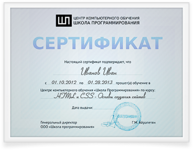
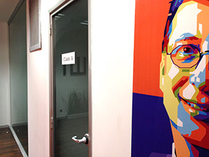
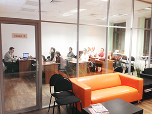
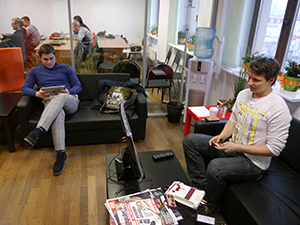

8 (800) 775-41-89
По России звонок бесплатный
Центр компьютерного
обучения
обучения
Школа
программирования
программирования
Онлайн-курс
«Основы программирования»

Обучение с нуля
Предварительной подготовки не требуется.
Начните профессиональное развитие прямо сегодня!

2 недели занятий
Опытный преподаватель будет поддерживать
вас и отвечать на ваши вопросы
на протяжении всего курса

4 онлайн урока +
5 видеолекций
Огромный объем уникальной авторской
информации для начинающего программиста

Домашние задания
Специально разработанная система домашних
заданий для эффективного закрепления материала.

Пособия + записи
лекций
Вы сможете скачать все материалы курса
для повторного изучения в удобное время.
Видео
Обучение с нуля
2 недели занятий
4 онлайн урока
+ 5 видео лекций
+ 5 видео лекций
Домашние задания
Пособия
+ записи лекций
+ записи лекций
Что дает курс?
Возможность попробовать новую профессию
Получить, систематизировать и упорядочить базовые знания
Пройти полный курс обучения и получить престижную работу
Изменить свою жизнь и начать заниматься тем, что интересно
Повысить
квалификацию
квалификацию
Попасть в круг единомышленников, задавать вопросы, общаться
Пройти полный курс обучения и попасть на стажировку в реальный
ИТ-проект
ИТ-проект
Записывайтесь!
Начало занятий: 13 декабря100%
гарантия
возврата денег
гарантия
возврата денег
Мы вернем все деньги без лишних вопросов, если Вам что-то не понравится. Просто напишете об этом на почту.
970руб.
2 350 руб.
Вы не теряете эту сумму!
970 рублей будут начислены на внутренний счет ученика “Школы программирования” и будут доступны для оплаты любых дополнительных учебных продуктов центра!

Учеников уже научились
программировать
программировать

В 5 раз увеличилось
количество наших
учеников за 2013 год
количество наших
учеников за 2013 год

Учеников оценивают курс
на "отлично" и "хорошо"
на "отлично" и "хорошо"

Учеников продолжают
обучение у нас дальше
обучение у нас дальше
Что же такого уникального
в нашем курсе?
Предварительное тестирование
Мы проводим предварительное тестирование, чтобы формировать учебные группы со студентами одинакового уровня знаний.
Теория и практика
Не только теория, но и множество интересных практических заданий.
Методические пособия
Вы получаете видеозаписи лекций и методические пособия, поэтому у вас всегда будет возможность прослушать лекцию повторно.
Индивидуальные рекомендации
Подробный разбор домашних заданий, индивидуальные рекомендации.
Сертификат об окончании
Вы получите сертификат об окончании курсов, подтверждающий уровень знаний.
Обучение и стажировка
Дальнейшее углубленное обучение по выбранной специальности и стажировка ведущих ИТ-компаниях.
Программа курса
Урок №1
09
декабря
Видеолекция
10
декабря
Видеолекция
11
декабря
Урок №2
12
декабря
Видеолекция
13
декабря
Урок №3
16
декабря
Видеолекция
17
декабря
Видеолекция
18
декабря
Урок №4
19
декабря
Секретный день
20
декабря
Урок №1
с 13:00 до 18:00
Ведущий
Дмитрий
Лаврик
Лаврик
Что такое программа и где она выполняется
- Где выполняются программы
- Устройство компьютера, и что нас в нём интересует
- постоянное запоминающее устройство
- оперативная память
- процессор
- Представление данных в памяти компьютера
- двоичная система счисления
- бит, байт
- перевод чисел в двоичную систему счисления
- перевод чисел из двоичной системы счисления
- Низкоуровневые языки программирования
- Высокоуровневые языки программирования
- На каких по уровню языках будем писать мы?
Дополнительные материалы:
 Запись урока
Запись урока
 Методичка
Методичка
 Домашнее задание
Домашнее задание
Видеолекция
с 13:00 до 18:00
Ведущий
Андрей
Мишанин
Мишанин
Ведущий специалист по мобильной разработке компании Яндекс
Правила разработки мобильных приложений
- Характерные черты
- Дизайн
- Ограниченность ресурсов
- Правила грамотной разработки
- Цикл разработки
- Ресурсы для мобильных разработчиков
- Карьера мобильного разработчика
- Фриланс мобильного разработчика
Дополнительные материалы:
Запись урока
Видеолекция
с 13:00 до 18:00
Ведущий
Ольга
Кузнецова
Кузнецова
Специалист по маркетингу и продвижению
Секреты юзабилити сайтов
- Для чего стоит изучать юзабилити?
- Какие применяются методы (примеры)
- Чего не стоит делать в интерфейсах? (Ошибки, примеры)
- Примеры результатов некоторых тестов
- Как с помощью юзабилити не снижая цены можно повысить продажи (примеры)
Дополнительные материалы:
Запись урока
Урок №2
с 13:00 до 18:00
Ведущий
Андрей
Жариков
Жариков
Специалист по маркетингу и продвижению
Постановка задачи и алгоритмы
- Что должна сделать программа
- постановка задачи
- входные данные
- выходные данные
- Алгоритмы
- понятие алгоритма
- примеры алгоритмов
- зачем нам алгоритмы
- Переменные
- что такое переменная
- где в компьютере хранятся переменные
- зачем нужны переменные
- Ветвления (в алгоритмах)
- что такое ветвления
- нелинейное выполнение кода
- как ветвления обозначаются в алгоритмах
- Примеры задач и алгоритмов их решения
- Практика – составляем алгоритмы
Дополнительные материалы:
Запись урока
Методичка
Домашнее задание
Видеолекция
с 13:00 до 18:00
Ведущий
Илья
Ростокин
Ростокин
Эксперт в области поисковой оптимизации, фрилансер
SEO: Инструменты Оптимизации и Продвижения
- Этапы жизни веб-проекта
- Оптимизация проекта
- Работа с контентом
- Контроль качества
- Адаптация для SEO
- Адаптация к внешним вмешательствам
- Продвижение
- Работа со сторонними источниками
- SMM
- PR
- Реклама
- Примеры и ошибки
- Тенденции развития оптимизации
- Тенденции развития продвижения
Дополнительные материалы:
Запись урока
Урок №3
с 13:00 до 18:00
Ведущий
Дмитрий
Лаврик
Лаврик
Основы программирования
- Компилируемые и интерпретируемые языки программирования
- общее отличие компилируемых и интерпретируемых языков
- примеры компилируемых языков
- примеры интерпретируемых языков
- Практика – пишем Hello World
- выбираем язык программирования
- какая программа будет исполнять код
- Hello Word!
- Переменные
- как объявить переменную
- как записывать значение в переменные
- как считывать значения из переменных
- Типы данных
- что такое тип данных
- числа
- строки
- булевский тип
- другие типы данных
- Ветвления (в коде)
- Функции
- что такое функция
- смысл функций – убираем повторяющийся код
- область видимости
- возвращение значений из функции
- Практика
Дополнительные материалы:
Запись урока
Методичка
Домашнее задание
Видеолекция
с 13:00 до 18:00
Ведущий
Дмитрий
Акинин
Акинин
Фрилансер, разработчик интернет-проектов для крупнейших медиа-холдингов
Тренды WEB-разработки
- Тенденции WEB-дизайна
- Типографика
- Новые технологии веб-разработки
- Два подхода к созданию сайтов
- Библиотека Modernizr
- Шаблон Boilerplate
- Media Queries — адаптивная верстка
- Нестандартные шрифты
- Технология Less
- Фреймворк Twitter Bootstrap
Дополнительные материалы:
Запись урока
Видеолекция
с 13:00 до 18:00
Ведущий
Семен
Давыдов
Давыдов
Фрилансер, владелец компании по разработке софта, в прошлом сотрудник Яндекса
Собеседование разработчиков на 70к+
- Подготовка к собеседованию
- Принцип обучения в карьере
- Правила составления резюме
- Один мощный инструмент в поиске работы
- Фишки, которые сделают Ваше резюме неотразимым
- Чего НЕ нужно писать в резюме (хотя все пишут)
- Золотое правило в поиске работы своей мечты
- Правила успешного прохождения собеседования
- Чего НЕ нужно делать на собеседовании
- Что делать, если не знаешь правильного ответа
- Правильные ответы на вопросы, которые встречаются на каждом втором собеседовании
- Рекомендации для продвинутых пользователей ;)
- Ваши действия после собеседования
- Если взяли на работу...
- Принцип башорга
Дополнительные материалы:
Запись урока
Урок №4
с 13:00 до 18:00
Ведущий
Дмитрий
Лаврик
Лаврик
Специалист по маркетингу и продвижению
Языки программирования
- Циклы
- что такое циклы
- виды циклов
- примеры использования циклов
- Массивы
- что такое массивы
- примеры использования массивов
- Практика
- Обзор современных языков программирования и их назначения
- языки для разработки сайтов
- языки для разработки настольных приложений
- языки для разработки программ под мобильные устройства
- специфика каждого из направлений
- как работает интернет
- Что делать дальше
Дополнительные материалы:
Запись урока
Методичка
Домашнее задание
Секретный день
с 13:00 до 18:00

Выдача сертификатов
и награждение
лучших студентов
А так же раздача секретных подарков всем участникам
1
2
3
4
5
Вы записались на курс "Основы программирования"
После курса у Вас будут базовые навыки программирования
Теперь вы сможете выбрать обучение по конкретной профессии: веб-программист, разработчик мобильных приложений или же создатель компьютерных приложений
Начинайте стажировку в компаниях-партнерах ШП еще во время обучения
Получите сертификат выпускника
Продолжайте работать над текущим проектом или трудоустройтесь в компанию мечты уже с готовым портфолио и оптытом реальной разработки
Познай путь программиста!
Как проходят занятия
Уникальная технология трансляции уроков через интернет делает удаленное обучение таким же удобным, как очное присутствие.
Во время проведения занятий в реальном классе вы подключаетесь через интернет к онлайн-трансляции урока, перейдя по специальной ссылке оставленной на форуме ШП.

Вы слышите преподавателя и видите экран его монитора (рабочий стол).
Вы можете задавать возникающие вопросы в специальный чат. Преподаватель своевременно реагирует на комментарии онлайн-учеников и дает необходимые разъяснения.
Об учебном центре
Учебный центр «Школа Программирования» был основан выпускниками МГТУ им. Баумана. C 2010 года учебными программами Школы Программирования воспользовались более 25 000 человек в России, странах СНГ и дальнем зарубежье.
Цикл занятий по курсу «Основы программирования» подготовлен профессиональными преподавателями учебного центра «Школа Программирования», лидера России на рынке обучения программированию.
Программа курса
подготовлена совместно
с экспертами из ведущих
ИТ-компаний:


- 
- 
- 
Наши преподаватели
Роль преподавателя очень важна в обучении. Вы будете не просто слушать лекции о программировании,
но и выполнять после каждого урока домашние задания под чутким руководством
опытных преподавателя.

Дмитрий Лаврик
Под руководством Дмитрия уже более 2000 слушателей курсов получили навыки профессиональной веб-разработки.
- Сертифицированный бизнес-тренер
- Международный мастер спорта по шахматам
- Профессиональный веб-разработчик, успешный фрилансер, системный архитектор и руководитель ряда интернет-проектов
- Постоянный преподаватель Школы Программирования с 2011 года, автор множества курсов и ряда учебных методик

Андрей Жариков
Андрей умеет просто и понятно донести до слушателей материал любого уровня сложности. Пользуется огромным уважением и признательностью своих учеников.
- Профессиональный веб-разработчик со стажем 10 лет
- Прошел путь от рядового программиста в офисе до успешного фрилансера и системного архитектора коммерческих веб-сервисов
- Обучил более 1000 учеников техническим основам создания сайтов в интернете
- Начиная с 2013 года - постоянный преподаватель Школы Программирования
Истории успеха
Отзывы
Дмитрий, спасибо за доступно и подробно разобранную информацию. Повторение некоторых непонятных моментов объяснение трудных моментов. Занятия прошли легко в непринужденной обстановке, но все понятно! Еще раз спасибо!

Спасибо за доступное изложение материала. Не смогла участвовать во всех вебинарах, но обязательно досмотрю в записях.

Спасибо Дмитрий!

Хоть я не новичок в программировании, но пришел на занятия дабы понять в чем проблема при написании программ, мне Дмитрий очень в этом помог! Разжевал все песчинки, я видел в чате как люди радовались своей первой программе, это за 2 часа.... Когда я учился один, на это ушло 1.5 недели. Сама идея о "школа программирования", которая сейчас перед глазами достойна уважания, а про ее успех я даже слов не могу подобрать!

Занятия прошли в весьма лёгкой и не напряжной форме, но при этом интересно. Общение шло не как с кем-то абстрактным по ту сторону интернета, а осталось ощущение личного присутствия. Чувствуется педагогический навык Дмитрия в подходе к формированию и подаче занятий, позволяющий легче усваивать материал. К сожалению тоже не смог присутствовать на вебинарах в прямом эфире кроме первого, но записи посмотрел с большим удовольствием.

Прошел курс с большим удовольствием, в программировании новичок, но всегда был интересен процесс написания, вообще, принцип построения программ. Всё было доступно для понимания, увлекательно преподнесено, а сам процесс обучения с максимальным откликом от преподавателя Дмитрия Лаврика мне показался очень удобным, нет привязки к расстоянию! Появилось желание продолжать учиться дальше!) С уважением, Александр!

преподаватель именно такой, каким и должен быть преподаватель.
данный курс лучше всего подходит тем, кто ничего не знает о программировании
но присутствовали люди, которые хорошо разбираются в основах
они мгновенно отвечали на вопросы преподавателя
на мой взгляд абсолютному новичку было местами очень сложно понять всё на лекции
у меня уже были все эти знания основ, но не больше. И вопросов не возникало
я пришёл на курс, чтобы узнать на практике как в ШП проходит обучение
и определиться в каком направлении мне дальше двигаться (сайты, мобилы, прикладные пр.)
но вспоминая себя когда я был на нулевом уровне
и если бы в меня закинули за два часа столько информации
мне бы пришлось часами во всём этом разбираться
Вердикт - 5 баллов из 5
данный курс лучше всего подходит тем, кто ничего не знает о программировании
но присутствовали люди, которые хорошо разбираются в основах
они мгновенно отвечали на вопросы преподавателя
на мой взгляд абсолютному новичку было местами очень сложно понять всё на лекции
у меня уже были все эти знания основ, но не больше. И вопросов не возникало
я пришёл на курс, чтобы узнать на практике как в ШП проходит обучение
и определиться в каком направлении мне дальше двигаться (сайты, мобилы, прикладные пр.)
но вспоминая себя когда я был на нулевом уровне
и если бы в меня закинули за два часа столько информации
мне бы пришлось часами во всём этом разбираться
Вердикт - 5 баллов из 5

Доступно и понятно :)

Курс и преподаватель оставили самые лучшие впечатления. К сожалению, не смогла участвовать в занятиях в режиме реального времени и смотрела все в записи. Но это не помешало оценить блестящее и свободное владение материалом, гибкую манеру подачи, способность постоянно держать контакт с аудиторией.
Дмитрий Лаврик не только продемонстрировал высокий уровень "программистского" профессионализма, но и проявил лучшие качества настоящего преподавателя: одновременное обращение к слушателям разных степеней подготовки, доступность изложения без скатывания в примитивизм, мгновенное иллюстрирование любого теоретического пассажа практическим примером.
Восхитило его умение молниеносно реагировать на сообщения в чате, все время иметь их в виду и строить эпизоды урока исходя из потребностей и "непоняток" аудитории. Очень понравились разборы ДЗ,
Дмитрий постоянно проясняет самые важные "идеологические" моменты программирования, ставит важные принципиальные акценты, проводит профилактику глупых заблуждений. Это очень важно для таких "самоучек", как я, - здорово прочищает голову и многое ставит на свои места.
Огромное спасибо за уроки, ориентиры и радость общения с настоящим профи!
Дмитрий Лаврик не только продемонстрировал высокий уровень "программистского" профессионализма, но и проявил лучшие качества настоящего преподавателя: одновременное обращение к слушателям разных степеней подготовки, доступность изложения без скатывания в примитивизм, мгновенное иллюстрирование любого теоретического пассажа практическим примером.
Восхитило его умение молниеносно реагировать на сообщения в чате, все время иметь их в виду и строить эпизоды урока исходя из потребностей и "непоняток" аудитории. Очень понравились разборы ДЗ,
Дмитрий постоянно проясняет самые важные "идеологические" моменты программирования, ставит важные принципиальные акценты, проводит профилактику глупых заблуждений. Это очень важно для таких "самоучек", как я, - здорово прочищает голову и многое ставит на свои места.
Огромное спасибо за уроки, ориентиры и радость общения с настоящим профи!

спасибо большое

Дмитрию спасибо за курс. Сам первый раз занялся программированием, думал будет полная беда, но оказывается с не так все плохо.))) Курсы все понравились, профессиональный подход. Только жалко что мало людей это оценили и после первого урока, ходило всего два человека вместе со мной, но опять же даже в такой ситуации, Дмитрий выполнял свою работу профессионально. За что ему большое спасибо.

У меня всегда было желание освоить программирование, я уважаю тех людей, которые пишут программы по различным направлениям и целям. Защита диплома у меня было АСУТП на бэйсике и ассемблере. И когда представилась возможность, я не раздумывал... Было интересно, институтские навики пригодились и лектор хорошо вел занятия, практически, все было понятно. Сейчас понимаю, мечту свою нужно реализовывать, вот только финансы... А так непременно. Спасибо, что вы есть, и не забываете меня.

Курс был очень интересным и невероятно полезным. Для себя узнал много нового, т.к пока новичок в программировании. Буду двигаться дальше, благо возможности ШП позволяют. Много заманчивых предложений. Выбираю что подходит мне и чем именно в сфере программирования хочу заниматься. Дмитрию отдельное СПАСИБО за то что очень профессионально и доступно изложил материал. Все было великолепно. Огромное спасибо.

От Александра. Данный базовый курс для меня не прошел даром. Лекции очень интересные и познавательные. Будем двигаться потихоньку дальше.

Прошел все обучение! С помощью курса освежил свои знания, открыл для себя что-то новое. Дмитрий, огромное вам спасибо! НА мой взгляд, ваш курс является идеальным решением проблемы старта в программировании.

Спасибо Дмитрию за курс основы программирования. Он мне очень помог.

Я прошла всё обучение,преподаватель приятный,грамотно и понятно всё объясняет!Будем дальше пробовать учиться!Огромное спасибо!!

Доброго времени суток Дмитрий, благодарю вас очень ёмко, качественно и главное интересно и понятно. Самым ценным считаю второй урок,ибо правильное построение алгоритма работы программы фундамент качественного програмирования.Именно за этим и шёл на курсы. С Уважением Александр

Здравствуйте Ш,П, и в особенности Дмитрий у которого получилось интересно изложить курсы о программирование. Хоть мне и с трудом все это дается ,но все мои старания перед неизведанным развили интерес к программированию. И в этом я считаю большая заслуга Дмитрия. Большое человеческое спасибо ВАМ ВСЕМ кто принимал участие по созданию этого курса с уважением Вячеслав.

Спасибо за курс, очень понравился. Самое главное, что всё объясняют очень доступно. Дмитрий Лаврик отличный преподователь, разбирает все вопросы которые задают, с душой подходит ко всем абитуриентам, ну и самое главное у него всегда хорошее настроение и это очень заряжает на обучение.

Курс очень понравился!
У меня есть некоторый опыт в программировании на VBA (под Аксес), и некоторые базовые знания по C. Но мне очень хотелось познакомиться с основами программирования под Интернет в JavaScript. Мне понравилось, как объясняет Дмитрий. Думаю, что с такими преподавателями можно изучить все.
Была удивлена, что даже в бесплатном курсе, Дмитрий внимательно анализировал все наши работы. Когда на моем задании показывали как можно сделать короче и лучше, чувствовала себя не онлайн, а в классе, возле преподавателя.
Отличный обзор направлений программирования. Очень вдохновляет. Думаю после отпуска записываться на онлайн обучение.
Теперь вижу, что онлайн учиться можно, и нужно. И без внимания не оставят, и помогут. Спасибо огромное.
У меня есть некоторый опыт в программировании на VBA (под Аксес), и некоторые базовые знания по C. Но мне очень хотелось познакомиться с основами программирования под Интернет в JavaScript. Мне понравилось, как объясняет Дмитрий. Думаю, что с такими преподавателями можно изучить все.
Была удивлена, что даже в бесплатном курсе, Дмитрий внимательно анализировал все наши работы. Когда на моем задании показывали как можно сделать короче и лучше, чувствовала себя не онлайн, а в классе, возле преподавателя.
Отличный обзор направлений программирования. Очень вдохновляет. Думаю после отпуска записываться на онлайн обучение.
Теперь вижу, что онлайн учиться можно, и нужно. И без внимания не оставят, и помогут. Спасибо огромное.

Хорошие курсы! Преподаватель Дмитрий Лаврик своё дело знает. Очень легко и понятно, весьма доброжелательно проводит занятия. По учебникам так не научишься. Мне понравилось, спасибо!!!

Большое спасибо за курсы. Дмитрий объясняет понятно и доходчиво. Занятия интересны. Практика в виде домашнего задания позволяет лучше разобраться в теории. И ничего лишнего. Всё просто. Спасибо вам, Дмитрий.

Интерессно, доходчиво, оригинально и очень познавательно. Мне понравилось, проходил курс для общего развитияя, многое почерпнул на будующее

Я новичек и раньше не сталкивался с программированием. Дмитрий великолепный учитель, у которого буду рад учиться и дальше. Все настолько логично и просто доносит до слушателя. Успехов Вам, Дмитрий!

Великолепный курс! Всё понравилось. Что-то знала раньше, а что-то было новым для меня. Спасибо, что помогли это систематизировать в моей голове)). Дмитрий - вы очень хороший преподаватель! Так держать :)

Все было великолепно, понятно и просто. Желаю дальнейшего развития школы. Побольше бы таких семинаров. Спасибо вам за труды Дмитрий

На ОП я записался, чтобы понять, с чего начать изучение языка Javascript. Никаких страхов не испытывал до курса, так как программировал и до этого и я знал на что я шел. Всё было замечательно, курсы проводились на высокой оценке, а преподаватель знает как привлечь и подать материал, чтобы он был легок в усвоении. Для меня как тут так и везде самое ценное в курсе оказалось это ДЗ. Большинство было весьма простым и делалось за минуту, но над некоторыми стоило попотеть. И это ведь не зря. За две недели обучаясь у вас, я понял все, чему вы нас учили. Самое основное понять для меня было это как работать с Javascript и вы мне показали как с ним разговаривать. Огромное спасибо за это. Сейчас я прослушиваю ваши курсы по марафону и жду мастер-класса 11 июля. Относительно марафона хочу сказать, что он уже вселяет надежду на то, что не зря начал его смотреть. Первые 4 урока - это в основном те уроки, которые были у нас с вами на ОП, но последние 4 урока они самые важные для меня, так что с нетерпением их жду. Относительно мастер-класса: я мастер-классы не люблю, но этот меня очень сильно заинтересовал, так что я его с нетерпением жду. Спасибо вам за всё!

На Основы программирования записалась по необходимости, такая себе легкая подготовка к изучению программирования в 1С :) Но это затягивает, оказалось. Зарегистрировалась на марафон, смотрю мастер-классы, и также жду 5 урока. Когда знания подаются в настолько доступной форме, грех упускать возможность. Благодаря ШП и Дмитрию начала разбираться в азах, успокоилась (а паника была, да), и буду продолжать учиться в ШП. Дмитрий - отличный преподаватель! Огромное ему спасибо!

Последние несколько месяцев увлеклась вёрсткой на html и css. Иногда требуется javascript. Вообще я люблю добывать знания самостоятельно, но не хватает систематизации. Иногда просто теряешься в потоке информации - что нужно изучать, а что нет... Случайно наткнулась на ссылку марафона и школы программирования и зарегистрировалась. Дима Лаврик - замечательный преподаватель. Доступно объясняет, отвечает на вопросы, держит обратную связь. Дима, спасибо вам огромное! С нетерпением жду 5 урока!

Отличный курс и великолепный преподаватель. До этого был на курсах по obj-c и мне казалось, что преподаватель на высоте объясняет материал, но после Дмитрия, я понял, что заблуждался:) Дмитрий, если Вы будете вести все курсы в ШП, то я запишусь на каждый, ибо так легко доносить информацию - это талант:)
Большое спасибо!

Спасибо большое за курс! Но преподавателя не хватает для обратной связи, даже на форуме видно, что у многих остались вопросы без ответов. Если бы было больше взаимосвязи, курсу бы цены не было! Темы даны доступно, логично. Спасибо!

После обучения на курсе Дмитрия Лаврика мой энтузиазм, в занятиях программированием, только возрос. Сейчас штудирую тематическую литературу и планирую дальше обучаться на курсах. Не исключено что в ШП, не исключено что у Дмитрия... Все темы были изложены доступно, а работа над домашними заданиями помогла, еще больше, вникнуть в суть пройденного. Дмитрий, спасибо Вам за уделенное нам время!!!

Дмитрий, огромное спасибо!!! Мне все очень понравилось, благодарю вас, за ценную информацию, очень понятную и доходчиво изложенную вами. За эти две недели, я понял, что программировать - это одно удовольствие, а самое интересное, меня затронул процесс написания кода. Вообще я ориентируюсь на веб-программиста и на данном этапе обучаюсь на курсе HTML & CSS и после данного курса еще собираюсь освоить PHP (1 и 2) уровня в вашей школе. Мне очень нравится ваша школа т.к. я хочу стать высококвалифицированным специалистом в этой обасти. Спасибо!

Дмитрий ,большое спасибо.Вы отличный педагог и с вами интересно,уроки проходят информативно и живо.Мне очень понравилось.Спасибо и удачи вам!!

Дмитрий, большое спасибо за Ваш профессионализм и метод подачи информации.
С Вами учиться легко, а это очень важно. Успехов Вам в жизни и в профессии.

Спасибо за курс!все было понятно.Жил бы в России и было бы чуть дешевле записался бы еще!

За курс - благодарность! Оставил исключительно положительные эмоции. Дима, Ваша заслуга! Легко, позитивно, с юмором, и вместе с тем всё понятно, доступно - то, что нужно для начинающих и сомневающихся. Спасибо!

Дима Лаврик - огромное спасибо за то что Вы делаете!
Всё понятно и доходчиво, обязательно вернусь к Вам в будущем для дальнейшего обучения!Спасибо и удачи!!!

Спасибо большое за данный курс! Вообще, я учусь на юридическом факультете, но желание каким-либо образом узнать основы программирования было всегда. Как-никак грядет, а точней уже в полном разгаре, век выскоких технологий. И каждый высококвалифицированный специалист любой отрасли должен идти в ногу со временем. Вот и я решила не отставать. К великому удивлению, онлайн-уроки шли в двустрононем порядке, т.е. и преподаватель "видел" учеников, и мы его. Мы могли задавать вопросы, а Дмитрий отвечал на них. Как преподавал Дмитрий Лаврик мне понравилось, ведь он объяснял доступным языком, без лишнего перегруза терминологией. Даже мне, гуманитарию до кончиков ногтей, было все понятно. Естественно, были трудности.. И алгоритм не могла верный составить, и код составить.. Но! Преподаватель на уроке разбирал подробно с нами все задания, предлагая несколько вариантов верных ответов. Мне кажется, что такие курсы просто необходимы. Пройдя самый первый, я теперь всерьез подумываю, а не пойти ли на дальнейшие курсы программирования и связать свою профессиональную деятельность с компьютерными преступлениями. Но, пожалуй, в этот раз хотелось бы пройти курсы в "живой" аудитории, не в онлайн-формате. Т.к. были перебои с интернетом, и либо картинка висла, либо не было слышно звук. Я бы с удовольствием прошла курсы в Вашей школе, но живу не в Москве.. Это грустно.. Но ничего страшного! Желаю вашей школе дальнейших успехов! Спасибо за такой опыт! :)

Помните, что Вы абсолютно ничем не рискуете
По нашей методике обучения уже научились программировать 7586 человек без какой-либо начальной подготовки. Чем Вы хуже?
Мы вернем все деньги без лишних вопросов, если Вам что-то не понравится. Просто напишете об этом на почту.
support@progbasics.ruМы полностью уверены в качестве нашего курса, поэтому предлагаем обучение на уникальных условиях:
970 рублей будут зачислены на внутренний счет ученика центра «Школа Программирования» и будут доступны для оплаты любых дополнительных учебных продуктов центра.
Пока Вы читали эту страницу,
кое-кто уже открыл
веб-студию или удвоил
зарплату

Сделайте первый шаг прямо сейчас и мы отправим книгу в подарок сразу после регистрации!
Из книги Вы узнаете, почему 98 из 100 программистов обречены на провал!
Записывайтесь!
Начало занятий: 13 декабря100%
гарантия
возврата денег
гарантия
возврата денег
Мы вернем все деньги без лишних вопросов, если Вам что-то не понравится. Просто напишете об этом на почту.
970руб.
2 350 руб.
Вы не теряете эту сумму!
970 рублей будут начислены на внутренний счет ученика “Школы программирования” и будут доступны для оплаты любых дополнительных учебных продуктов центра!